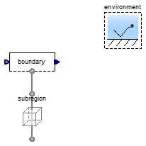
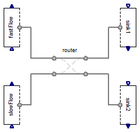
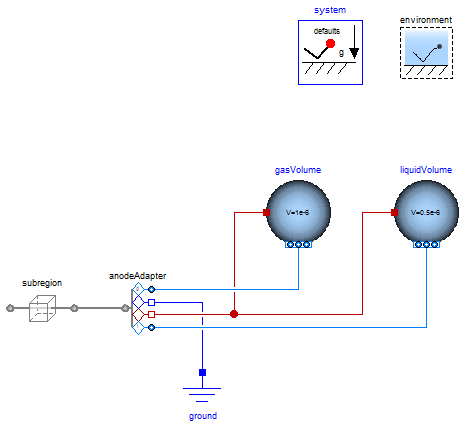

Examples
Information
Extends from
Modelica.Icons.ExamplesPackage (Icon for packages containing runnable examples).
Package Content
Test the conditions for the boundary of a subregion

Information
Extends from
Modelica.Icons.Example (Icon for runnable examples),
Modelica.Icons.UnderConstruction (Icon for classes that are still under construction).
Modelica definition
model BoundaryCondition
"Test the conditions for the boundary of a subregion"
extends Modelica.Icons.Example;
extends Modelica.Icons.UnderConstruction;
ByConnector.BoundaryBus.Single.Sink boundary;
Subregions.Subregion subregion(
L={1,1,1}*U.cm,
inclTransX=false,
inclTransY=true,
inclTransZ=false,
inclTransX=false,
inclTransY=true,
graphite('inclC+'=true, 'C+'(V_IC=0.5*U.cc)),
gas(inclH2O=true));
inner Conditions.Environment environment;
equation
connect(subregion.yPositive, boundary.boundary);
end BoundaryCondition;
Test the conditions for the boundary of a subregion with phases

Information
Extends from
Modelica.Icons.Example (Icon for runnable examples),
Modelica.Icons.UnderConstruction (Icon for classes that are still under construction).
Parameters
| Type | Name | Default | Description |
|---|
| Geometry |
| Length | L[Axis] | ones(3)*U.cm | Length [L] |
| Assumptions |
| Included transport axes |
| Boolean | inclTransX | false | X |
| Boolean | inclTransY | true | Y |
| Boolean | inclTransZ | false | Z |
Modelica definition
model BoundaryConditionPhases
"Test the conditions for the boundary of a subregion with phases"
import FCSys.Utilities.Coordinates.cartWrap;
import Modelica.Math.BooleanVectors.countTrue;
import Modelica.Math.BooleanVectors.enumerate;
import Modelica.Math.BooleanVectors.index;
extends Modelica.Icons.Example;
extends Modelica.Icons.UnderConstruction;
// Geometric parameters
inner parameter Q.Length L[Axis](each min=Modelica.Constants.small) = ones(3)*
U.cm "Length";
final inner parameter Q.Volume V=product(L) "Volume";
// Included boundaries
parameter Boolean inclTransX=false "X";
parameter Boolean inclTransY=true "Y";
parameter Boolean inclTransZ=false "Z";
ByConnector.BoundaryBus.Single.Phases.Gas boundary(inclH2O=true, H2O(
redeclare Conditions.ByConnector.Boundary.Single.ThermalDiffusive.heatRate
thermal, redeclare Conditions.ByConnector.Boundary.Single.Material.Current
material(set(y=U.A))));
Conditions.ByConnector.Amagat.VolumeFixed volume(n_phases=1);
FCSys.Phases.Gas gas(
inclH2=false,
inclH2O=true,
final n_trans=n_trans);
inner Conditions.Environment environment;
protected
final inner parameter Q.Area A[Axis]={L[cartWrap(axis + 1)]*L[cartWrap(axis +
2)] for axis in Axis} "Cross-sectional areas";
final inner parameter Boolean inclTrans[Axis]={inclTransX,inclTransY,
inclTransZ} "true, if each pairs of boundaries is included";
final inner parameter Boolean inclRot[Axis]={inclTransY and inclTransZ,
inclTransZ and inclTransX,inclTransX and inclTransY}
"true, if each axis of rotation has all its tangential boundaries included";
final inner parameter Integer n_trans=countTrue(inclTrans)
"Number of components of translational momentum";
final inner parameter Integer cartTrans[n_trans]=index(inclTrans)
"Cartesian-axis indices of the transport axes";
final inner parameter Integer transCart[Axis]=enumerate(inclTrans)
"Transport-axis indices of the Cartesian axes";
equation
connect(gas.yPositive, boundary.boundary);
connect(volume.dalton[1], gas.dalton);
end BoundaryConditionPhases;
Test the Router model

Information
Extends from
Modelica.Icons.Example (Icon for runnable examples).
Modelica definition
model Router
"Test the Router model"
extends Modelica.Icons.Example;
Conditions.Router router;
ByConnector.BoundaryBus.Single.Source fastFlow(gas(inclH2=true,H2(materialSet(
y=-U.A))));
ByConnector.BoundaryBus.Single.Source slowFlow(gas(inclH2=true,H2(materialSet(
y=-U.mA))));
ByConnector.BoundaryBus.Single.Sink sink2(gas(inclH2=true));
ByConnector.BoundaryBus.Single.Sink sink1(gas(inclH2=true));
equation
connect(router.positive2, sink1.boundary);
connect(router.positive1, sink2.boundary);
connect(fastFlow.boundary, router.negative2);
connect(slowFlow.boundary, router.negative1);
end Router;
Test the Anode adapter

Information
Extends from
Modelica.Icons.Example (Icon for runnable examples),
Modelica.Icons.UnderConstruction (Icon for classes that are still under construction).
Modelica definition
model AnodeAdapter
"Test the Anode adapter"
extends Modelica.Icons.Example;
extends Modelica.Icons.UnderConstruction;
inner Modelica.Fluid.System system(T_ambient=293.15 + 5);
inner Conditions.Environment environment(T=350*U.K);
FCSys.Subregions.SubregionNoIonomer subregion(
L={1,1,1}*U.cm,
inclTransY=false,
inclTransZ=false,
gas(inclH2=true, inclH2O=true),
graphite('inclC+'=true, 'incle-'=true),
liquid(inclH2O=true));
Adapters.MSL.Anode anodeAdapter(redeclare package LiquidMedium = Modelica.Media.CompressibleLiquids.LinearColdWater);
Modelica.Electrical.Analog.Basic.Ground ground;
Modelica.Fluid.Vessels.ClosedVolume gasVolume(
use_portsData=false,
nPorts=1,
V=1e-6,
use_HeatTransfer=true,
redeclare Modelica.Fluid.Vessels.BaseClasses.HeatTransfer.IdealHeatTransfer
HeatTransfer,
redeclare package Medium = Adapters.Media.AnodeGas,
medium(p(fixed=true),X(each fixed=true)));
Modelica.Fluid.Vessels.ClosedVolume liquidVolume(
nPorts=1,
use_HeatTransfer=true,
redeclare Modelica.Fluid.Vessels.BaseClasses.HeatTransfer.IdealHeatTransfer
HeatTransfer,
V=0.5e-6,
use_portsData=false,
redeclare package Medium = Modelica.Media.CompressibleLiquids.LinearColdWater,
medium(p(fixed=true),T(fixed=true)));
equation
connect(ground.p, anodeAdapter.pin);
connect(subregion.xPositive, anodeAdapter.boundary);
connect(gasVolume.heatPort, anodeAdapter.heatPort);
connect(gasVolume.ports[1], anodeAdapter.gasPort);
connect(liquidVolume.heatPort, anodeAdapter.heatPort);
connect(anodeAdapter.liquidPort, liquidVolume.ports[1]);
end AnodeAdapter;
Test the stoichiometry of a reaction

Information
Extends from
Modelica.Icons.Example (Icon for runnable examples),
Modelica.Icons.UnderConstruction (Icon for classes that are still under construction).
Parameters
| Type | Name | Default | Description |
|---|
| Current | speciesA | redeclare ByConnector.Chemic… | |
| Potential | speciesB | redeclare ByConnector.Chemic… | |
| Potential | speciesC | redeclare ByConnector.Chemic… | |
| Assumptions |
| Included transport axes |
| Boolean | inclTransX | true | X |
| Boolean | inclTransY | false | Y |
| Boolean | inclTransZ | false | Z |
Modelica definition
model Stoichiometry "Test the stoichiometry of a reaction"
extends Modelica.Icons.Example;
import Modelica.Math.BooleanVectors.countTrue;
extends Modelica.Icons.UnderConstruction;
// Assumptions
// -----------
// Included components of translational momentum
parameter Boolean inclTransX=true "X";
parameter Boolean inclTransY=false "Y";
parameter Boolean inclTransZ=false "Z";
inner Conditions.Environment environment(T=360*U.K);
replaceable ByConnector.Chemical.Current speciesA(
final inclTransX=inclTransX,
final inclTransY=inclTransY,
final inclTransZ=inclTransZ,
sT=2000*U.K,
redeclare Modelica.Blocks.Sources.Ramp set(duration=100, height=-1*U.A));
replaceable ByConnector.Chemical.Potential speciesB(
final inclTransX=inclTransX,
final inclTransY=inclTransY,
final inclTransZ=inclTransZ,
sT=3000*U.K);
replaceable ByConnector.Chemical.Potential speciesC(
final inclTransX=inclTransX,
final inclTransY=inclTransY,
final inclTransZ=inclTransZ,
sT=4000*U.K);
Conditions.Adapters.ChemicalReaction A(
m=U.g/U.mol,
final n_trans=n_trans,
n=-1);
Conditions.Adapters.ChemicalReaction B(
m=U.g/U.mol,
final n_trans=n_trans,
n=2);
Conditions.Adapters.ChemicalReaction C(
m=U.g/U.mol,
final n_trans=n_trans,
n=2);
protected
final inner parameter Boolean inclTrans[Axis]={inclTransX,inclTransY,
inclTransZ}
"true, if each component of translational momentum is included";
final inner parameter Integer n_trans=countTrue(inclTrans)
"Number of components of translational momentum";
equation
connect(A.chemical, speciesA.chemical);
connect(B.chemical, speciesB.chemical);
connect(C.chemical, speciesC.chemical);
connect(C.reaction, B.reaction);
connect(B.reaction, A.reaction);
end Stoichiometry;
 FCSys.Conditions.Examples.BoundaryCondition
FCSys.Conditions.Examples.BoundaryCondition FCSys.Conditions.Examples.Router
FCSys.Conditions.Examples.Router FCSys.Conditions.Examples.AnodeAdapter
FCSys.Conditions.Examples.AnodeAdapter